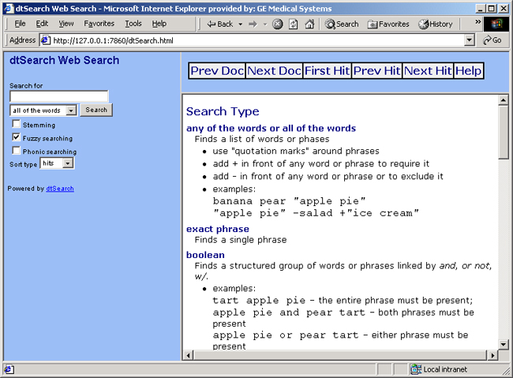
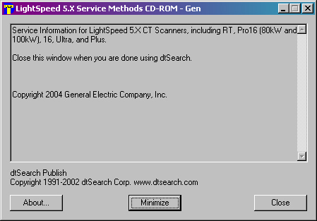

Operating Documentation
Direction 5224328-800, Rev# 5
Dir 5224328-800 LightSpeed 5.X HP60 Limited Access Service
Methods - Adv.
Operating Documentation |
| Last Revised: | January 6, 2006 |
| NOTE: | The dtSearch tool only works on Windows operating systems. |
The search tool that is included on this CD-ROM is dtSearch. It allows the user to search both HTML and PDF files by keyword.
| NOTE: | IMPORTANT: Read the Instructions below (Section 3), BEFORE launching dtSearch. |
| NOTE: | Clicking either of the following links will open a new window. Clicking either of the following links will NOT automatically close this window (“Launching dtSearch”). Use the “X” (upper right corner) -- or <Ctrl + w> -- to close this window. |
(For dtSearch Version 6.2) View dtSearch Help (Version 6.2)
(For dtSearch Version 6.4) View dtSearch Help (Version 6.4)
When you click the "Launch dtSearch Tool" link (above), a File Download message box appears. The message/choices displayed depend on your PC's operating system and settings. Depending on your PC, select: [Run] , [Open] , or select “Run this program from its current location” then click [OK] .
(For Windows 2000) If a security Warning popup appears, click [Yes] .

The dtSearch Publish window appears.

| NOTE: | The dtSearch Publish window needs to be open when you are using the dtSearch engine. Minimize the window when you need to search for documents. Close the window when you have finished searching. |
The dtSearch Web Search window opens. You are now ready to use the dtSearch engine. It will search for specific data in both HTML and PDF documents.
1. Close the dtSearch Window (see Illustration 1).
Illustration 1: Example dtSearch Window (Version 6.4 shown)

2. Click [Close] in the “dtSearch Publish” window (see example, in Illustration 2).
Illustration 2: Example “dtSearch Publish” Window

| NOTE: | Closing this control window will NOT close the HTML publication. Nor will it prevent you from continuing to use the CD-ROM/DVD. |